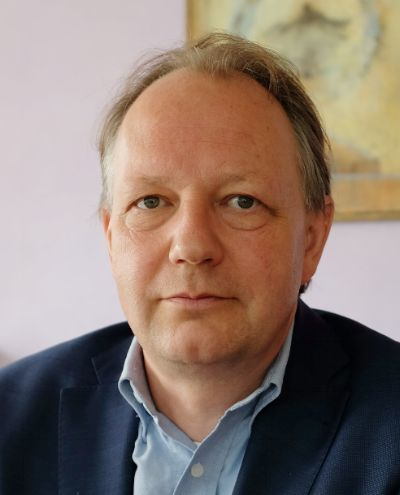

How did you start meditating?
I was 17 years old. In class we read Socrates who is very important for me and is my hero. He had autocracy, control of himself, was open to material, to spiritual, to death. I believe he’ll play a big role in the future. My classic teacher brought me to Anthroposophy via a book of Steiner Theosophy. I read about the three-fold man and discovered such an image of man. That was the greatest experience I’ve ever had.
When I was 18 I went to a Trappists monastery, because I wanted to start meditate. It didn't work at all, but I tried and that was my start of striving to get an inner life. I then decided to study philosophy and participated in studies of the philosophy of Steiner. We went into exercising and my meditation life is still based on it. I decided to take the Foundation Stone, Rückschau as a part of my life. After seeing a movie, for example, before going to sleep, I would go back in the movie, from end to the beginning.
Because of your question, I realised that I don't have the biography of my meditational life. When you have decades to go, you should make a diary of your experience and your choices. It could be interesting now to look back.
Why do you meditate?
In the beginning meditation was an incarnating process to become more myself, to get in-touch with ideals and strivings. Each time you make an effort, you make your inner morality stronger. That was very important for me. Always feeling my ideals, my morality, goals, working on my virtues. For example, the Six Exercises have to do with virtue and personal competence.
When I look at myself now it's more about excarnation, finding commitment and connection to the world and to people and beings. In the beginning, it was to fill myself with the ideals, thoughts, perspectives. Now the goal is to become emptier and receptive, to excarnate into more emptiness and connectivity.
Could you outline examples of the basic Anthroposophic meditation or exercises in your understanding?
Perhaps, firstly I can answer a question – What is anthroposophical meditation? It's about exercises and it goes fluently on with more meditative life. For me anthroposophical meditation is about integrating willing, feeling and thinking. Because this integration is an act you can only do by yourself, you have to be there to integrate these faculties.
I've done thinking exercises more than feeling ones. It’s a pity. I became more conscious of my goal — of integration. Each meditation has to go through this integration; when you have a content or an image, a sentence, a word, and then you try to have feelings about them; your will is engaging, committing and connecting. Now I am researching for one session of meditation 15–20 min – how to make it three-fold.
The exercises are personal and one can't say they should be the same for everyone. Fundamental are the Six Exercises that are about concentration, discipline, neutral feeling, positivity and open mind. It is important to work on them and other virtues. I worked with the circle and the point meditation last several years. This meditation is not only about relation to yourself, but also about your relation to other people and to the world. It gives you strength to go your way, to help and to welcome what is coming on. The Foundation Stone Meditation is important for me too, but was not easy for me to enter. It got slowly better, easier to engage with over time.
As a student I took over a dogmatism ‹you shouldn't meditate together with other people›. But people can exercise and meditate together in many ways. You have to know what and why you do it. I learned that practicing together is helpful and you have to find the exercises which are suitable for you. You need to find your own entrance, to be sensible for the contents and ways which are resonating with you.
I got to the point where my meditational life became a part of my biography. That's why a diary of your meditational life could be important. When you get more yourself, your meditation become more personal. There is a relation, a parallel between finding your way in meditation and in life. They are connected. I experienced it myself.
What was the most memorable experience for you in Living Connections, the first public event on meditation at the Goetheanum on July 2017?
I did a workshop with two other people and the cooperation between us was great. It was a great experience do it together, without judgment. I was so impressed by the intensity of how people engaged and worked together. We sat in the top of the Glasshouse with its terrible acoustics and narrow space, but it didn't bother us. I was amazed by the willingness and intensity of the people who were there. It gave me hope that we will be able to increase our social resources for growing together.
I have a kind of a mission. For me the focus now is on meditation as a part of working life. Meditation can be a corporate practice. For five years we’ve done it in my company. We started doing exercises and meditation in our management teams on the meetings, even business and board meetings. There is such a willingness, openness for making together, for doing exercises, which are intrinsically connected to your real questions and core.
That is a new insight, a new way of working. You need encourage each other by trying and preparing. Meditation in business, spirituality in organisations, is so important in anthroposophical settings and institutions. It is important to create a possibility to exercise and meditate not for fun or the good, but for the future, for the things you have to do for your clients and children. And by doing it you try to integrate thinking, feeling and willing. You need social art as well. You need new situational rituals by which you vividly experience what is important.
I am a member of the board of the Anthroposophical Society in Netherlands. We are working on concrete ways of practising the exercises, which are part of the Foundation Stone. We're building the Foundation Stone into an instrument to do Anthroposophy. This is a part of what we are working together. So you can speak about problems and do it in a threefold way. We have to overcome our culture of shame. Our Society is not just about studying Steiner, but about following the inner struggles of people.
There is a longing in me, to work in this direction. You can also support this work by doing some new ritual. It can sound a bit weird, but you can go beyond a quote, a mantram, a candle. You have to have courage to explore and this is what I am trying to do.
This is what Living Connections brought in. You have to meditate individually, but you can work together with others. When you’re conscious about what you are doing and talk about it, it doesn't have to be un-free or dangerous. It’s a natural part of our times – to do together; when you are trusting each other, you can also build a circle for the future. Everywhere you can build a circle of common awareness, where you are working for a larger goal.